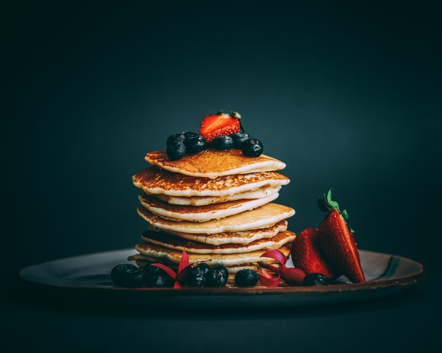

Nutrition Facts
Per Serving: 219 calories; protein 7.2g; carbohydrates 30.7g; fat 7.4g; cholesterol 63.3mg; sodium 515.5mg. Full Nutrition
Step 1In a large bowl, combine flour, sugar, baking powder, baking soda, and salt. In a separate bowl, beat together buttermilk, milk, eggs and melted butter. Keep the two mixtures separate until you are ready to cook
Step 2Heat a lightly oiled griddle or frying pan over medium high heat. You can flick water across the surface and if it beads up and sizzles, it's ready!
Step 3Pour the wet mixture into the dry mixture; use a wooden spoon or fork to mix until it's just blended together. The batter will be a little lumpy which is what you want
Step 4Pour or scoop the batter onto the preheated griddle, using approximately 1/2 cup for each pancake. Cook until bubbles appear on the surface, 1 to 2 minutes; flip with a spatula and cook until browned on the other side. Repeat with remaining batter